Roles
- UX Design
- UI Design
- Branding
- Landing Page Design &
Development
Deliverables
- User Survey
- User Personas
- User Stories
- User Flows
- Wireframes
- Low and High Fi Mockups & Prototypes
- User Testing
- Style Guide
- Hand-Coded Informative
Landing Page
Tools
- Figma
- Adobe CS
- Usability Hub
- Google Drive
- Draw.io
- HTML
- CSS
- Git/GitHub
Problem
When families expand and mature it can sometimes be difficult for all members to stay in the loop and maintain a close connection. I wanted to figure out a way to preserve and even strengthen these connections so that people can stay up-to-date with what is happening in their loved ones’ lives.
Solution
I created Family Room which is a mix between a social media and group messaging application. The app features a linear group chat, organized group media, and conference calling to give people multiple ways of staying in touch and in each others’ lives while keeping things private and just within the family.
Discovery &
Research
User Survey
I began the research phase of this project by distributing a user survey about group messaging apps to 55 participants and collecting the results.
Some of the key findings from my survey were:
98%
use Whatsapp
56%
use Apple iMessage
51%
use Facebook Messenger
98%
use group chats for their families
100%
share media in their group chats
98%
share content in a family group that they would not share on social media
Competitive Analysis
I wanted to see which apps are on the market to get a sense of what my competition would look like, what problems still need solving, and what other apps have done effectively (if it’s not broken why fix it, right?). I took a look at Whatsapp, GroupMe, and Apple iMessage, analyzing their strengths, weaknesses, opportunities, and threats.
Main Takeaways:
- 1. Price - All of the apps are free to use.
- 2. Syncing - The apps can sync to a user’s computer for ease of use and convenience.
- 3. Conversations - The apps offer one-on-one and group conversations.
- 4. Media - A user has the ability to send and receive media through these apps but they are unable to organize that media.
- 5. Calling - None of the apps offer both group calling and group video calling.
User Personas
After analyzing my survey results and completing a competitive analysis on competing apps, I created user personas to hone in on my app’s target audience and further understand how different types of people might interact with it.
- Hannah M.
- 19 years old
- Undergraduate Student
Goals
1. To stay connected to her family and to receive photos of her baby niece on a regular basis!
2. To share content with her close friends like private jokes or photos – things that she wouldn't want to post on a larger social platform.
Frustrations
1. Too many chats and all on different platforms. Most of them only work either if you have a specific type of phone (like iPhone for iMessages) or if everyone has the same app (like WhatsApp or Group Me.
2. Sometimes she and her close friends want to have a group video chat, but there is no way to do that from whatever group app they use.
- Nicole F.
- 26 years old
- Teacher, Mother
Goals
1. To be able to stay in the know with close friends and family by sharing news, photos and other types of media.
2. To be able to reply to a specific message within a group chat - otherwise it can get confusing, disorganized, and even annoying.
Frustrations
1. When she shares content on larger social media platforms she can’t control who in her network sees it, which results in her rarely sharing things on these platforms.
2. Sometimes she is added to a chat that she doesn’t want to be in. It would be nice to only be a part of chats that she decides to opt into.
- Jacob S.
- 58 years old
- Lawyer
Goals
1. To stay connected to his family - everyone is located in different geographical areas.
2. Have a group chat that only includes the people who are most important to him and to share and receive media and information.
Frustrations
1. Facebook and other social platforms are too public! He doesn’t want to see information from people who he went to college with if he is not currently in touch with them, and he definitely doesn’t want to share his personal information with them.
2. With the group messaging apps that he currently uses, he must sort through the group’s media to find something specific, which is frustrating and takes too much time.
Information Architecture
User Stories & Flows
After creating user stories, I developed a series of user flows and a site map focused on the onboarding experience, media sharing, and creating a new group. This part of the process helped me understand which features should be offered in the app and how each can be implemented.
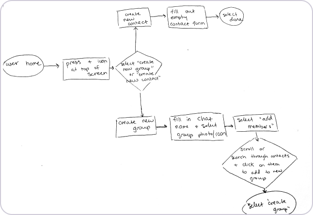Sketch of user flow focused on creating a new group or contact
View All Stories & FlowsSketching & Low-Fidelity Wireframes
Based on all previous research, I created a series of hand sketches and low-fidelity wireframes to begin visualizing the interface of the app and how a user might interact with it. At this point I decided to focus on a mobile-friendly design for my MVP (minimum viable product) due to the app’s focus on mobile communication.and a short time frame.
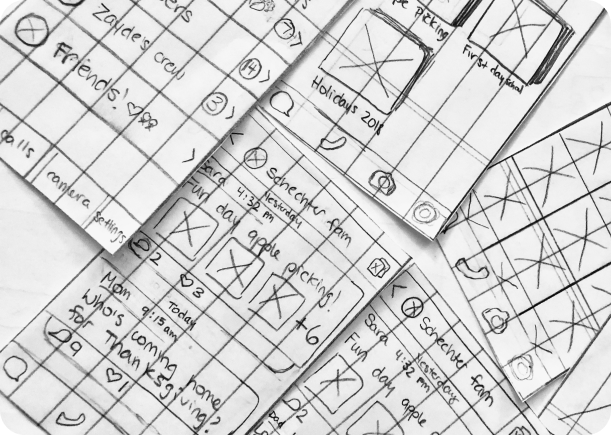Sketches of home, chat, media, and call screens
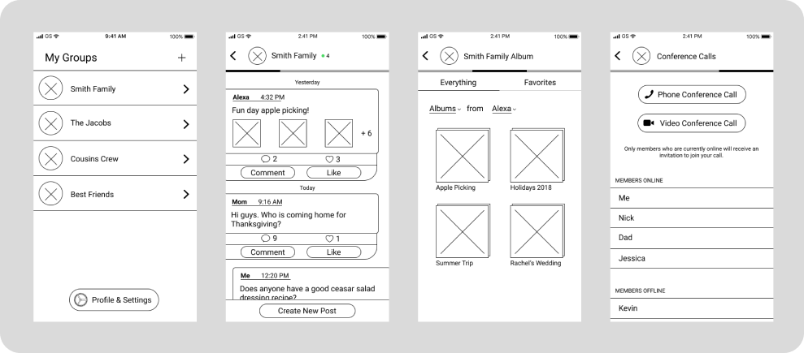Low-fi wireframes of home, chat, media, and call screens
View All Low-Fi WireframesUser Testing 1
I gathered feedback on my low-fidelity wireframes from potential users by giving them a task to complete within a clickable prototype and looking out for pain points along the way.
Things to Test:
- 1) Users’ understanding of swiping ability across the app.
- 2) Users’ ability to create a new group and add contacts to the group.
- 3) Users’ ability to interact with a post (like and comment) and create a new post.
- 4) Appearance of send icon.
Iterations:
The flow-tests were overall successful, but some iteration was needed on features like the swiping indicator and the send icon.
1) I replaced a progress bar with pips (little dots) to indicate swiping abilities.
Before
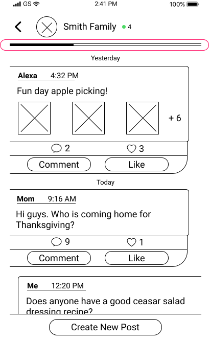After
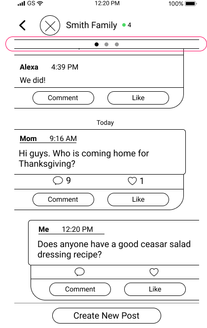2) The “send” icon looked too similar to an email icon, so in a high-fidelity mockup I replaced it with something that looks similar but slightly more abstracted.
Before
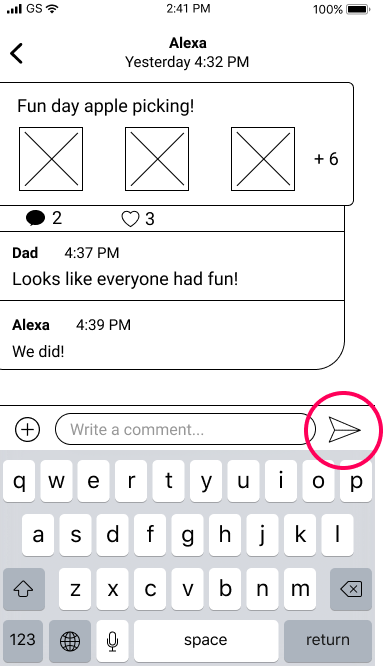After
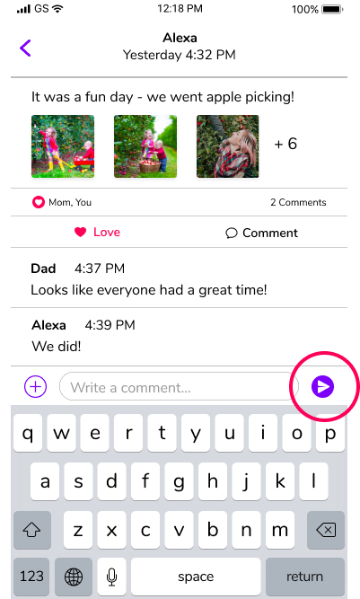Visual Design
Logo Design
I named the app “Family Room” as its goal is to emulate the experience of a group of people being in the same room.
I started the logo design process by sketching various shapes and abstracted groups of people. I went through many iterations of my logo accompanied by testing along the way. I didn’t feel so strongly about any of these options and felt that these iterations lacked meaning and were very corporate-looking, so I went for a slightly different approach.
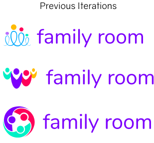I looked for avatar examples online and started sketching some similar images.
After much more testing, feedback, and iteration, I landed on these final designs:
Primary logo: used in large spaces
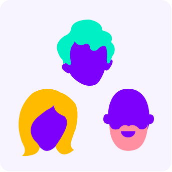App icon: thumbnail for mobile application icon
Horizontal logo: used in narrow spaces
Typeface
I selected the font “Nunito” as the product typeface because of its versatility, readability, and subtle playfulness. I used three variations of the typeface: regular, semi-bold, and bold.
Color Palette
I used a
High-Fidelity Mockups
After the app’s branding and identity was finished and applied to prior designs, I created a series of high-fidelity mockups which were based on the original low-fi wireframes.
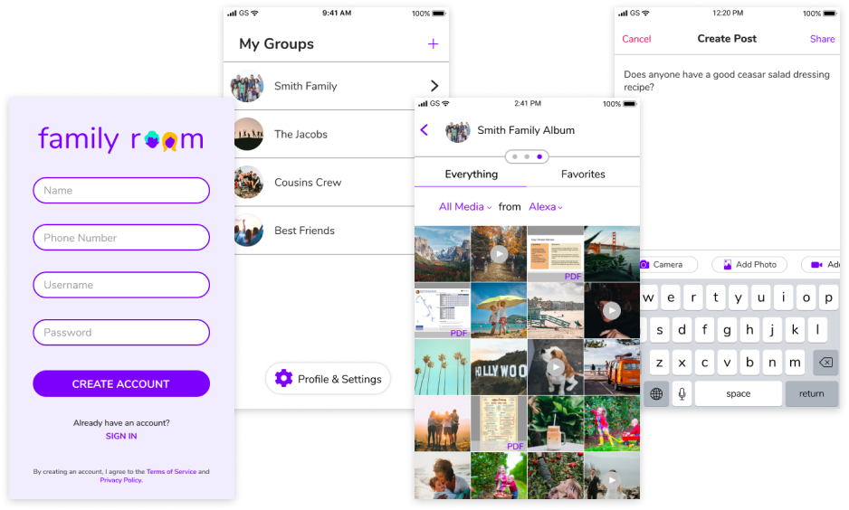User Testing 2
I tested out my mockups in the form of a clickable prototype with a number of users. The users brought up some excellent questions about select features, and these conversations helped shape many design decisions that I made to produce the final product. Below are summaries of these conversations and a look at how the final product came to be.
Topic 1: Conference Calling
This was a feature I thought should be included in Family Room as it contributes to the goal of having all modes of communication accessible through the app. In the original model, by pressing the “Phone Conference Call” or “Video Conference Call” buttons, everyone who is online receives a call unless there are only two people online, in which case no call would be placed. The reasoning for this was to stand out and not compete with apps offering one-on-one calling.
Some questions that my testers asked were:
1. What if there are 8 members online but I only want to talk to 4 of them? Can I specify which members I wish to include?
I liked the concept of selection/deselection, so I tried including this feature by adding a short disclaimer. Here is what the interface looked like at that point:
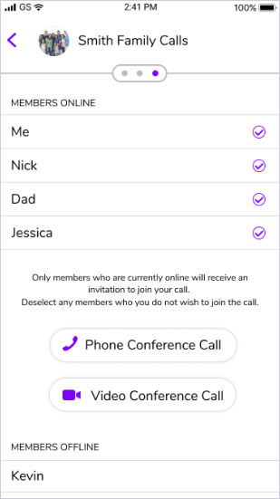2. What if someone wants to receive a call initiated by a group member even if they’re not currently using the app?
I thought this was a good point, and figured that in a fleshed out app, a user can modify their call settings so that they choose when they receive calls – either when they’re inside the app, when they’re active on their phone, or at all times – even if the phone’s screen is off. This question brought up the complex idea of “status” in the online world, which was a topic I chose not to deal with in the MVP, but would love to examine in a future iteration of the app.
3. What happens if there are three people on a call, and one leaves – does the call automatically drop because there are fewer than three people?
I understood what this tester was asking and agreed with the confusion this might bring upon users in a group call. I began to think that it might be best to continue promoting this feature as a group conference call but not plan to disable only two people from speaking if they are the only ones online.
Final Result
For the MVP’s call feature, I ultimately decided to have green dots symbolize a user being “online,” referring to a user currently using the app, in which status he or she would receive a call. Red dots symbolize “offline” and indicate that the user is not currently using the app and would therefore not receive a call. I also decided that for the sake of a simple and functional MVP, there would be no “deselecting members” from the online list. The idea of curating the members of a call is an interesting feature and something that would be worth looking into in the future, but I didn’t think it was a necessary addition to the current state of the app.
Topic 2: Chat Aesthetic
Even after adding color and branding to my mockups, I still felt they looked a little wireframe-y. I worked with a senior designer to revise the aesthetic of the main chat view and give the app more of a high fidelity feel. Here are two images of the before and after versions of a few screens:
Chat View
Before
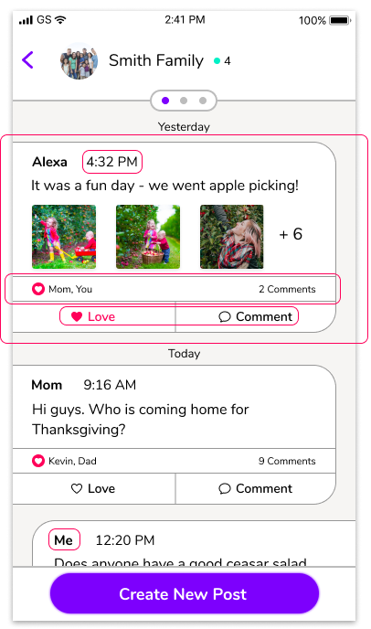After
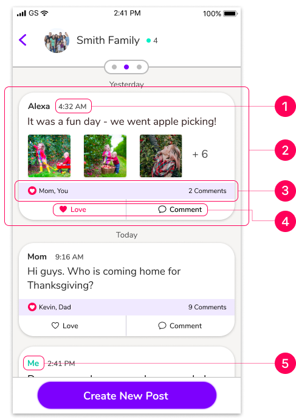1) I reduced the size of the timestamp and lightened its text-color to help with the visual hierarchy of information in this section.2) I centered the card to eliminate excess grey space in the chat window and add an additional “social media” vibe. and a drop shadow replaces the border. I also eliminated the chat card’s heavy border by giving the card a slight drop shadow instead.3) I eliminated the “Love/Comment” bar’s heavy stroke and replaced it with a light blue background color.4) I reduced the size of the love/comment button labels to further establish a visual hierarchy.5) I differentiated messages that are sent by the user by highlighting the sender’s name in green.
Within a Post
Before
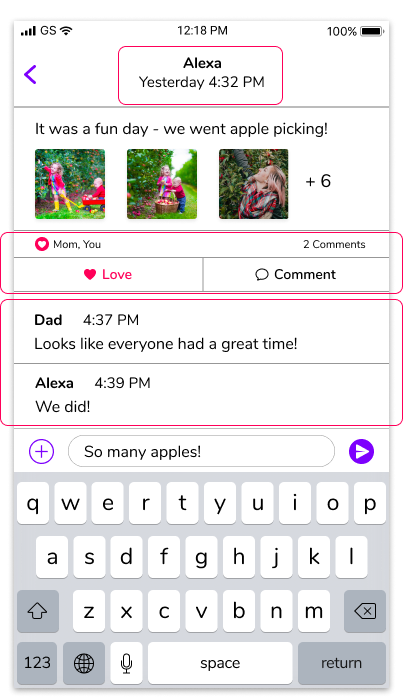After
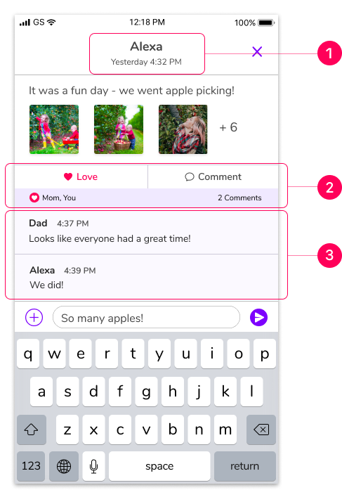1) I enlarged the name of sender and reduced the size of the date sent.2) I reversed the order of the love/comment bar and buttons and gave the bar a blue background.3) I differentiated the comments section by adding a lighter blue background color.
Landing Page
As an additional element of the project, I used HTML and CSS to code out a responsive landing page about Family Room. The page provides information about the app to a potential user and conveys those details through a hero section as well as various paragraphs about specific app features.
What I Learned
1. Test often and at various stages of the design process:
I started running user tests by creating clickable prototypes from my low-fidelity wireframes, and found that the questions and feedback that resulted were instrumental to the project’s development. I tested and created various iterations of my logo designs; each time getting closer to the final product.
2. Focus on creating a streamlined and uncluttered MVP, however cool those other features are:
There were so many interesting and exciting features I initially wanted to include, but I eventually realized I needed to cut back on several potential features so that I could produce an MVP.
3. How to make a stronger UI:
I learned to improve the app’s UI through color, space, line weight, and a distinct visual hierarchy.
4. How to effectively collaborate with senior designers:
I worked on multiple iterations of my designs with two different senior designers. I learned how to take their suggestions into consideration and produce outcomes that reflected my preferences along with their recommendations.
I had a great time creating this project, and it feels very rewarding to have turned a mere idea into a tangible prototype. I feel energized by the lessons the Family Room development process has taught me, and am excited to bring my new-found knowledge and experience to future projects and opportunities.